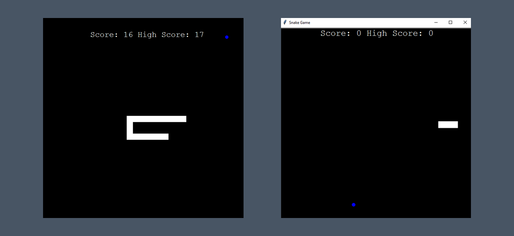

Snake
This Snake Game, built in Python using the turtle module, offers a classic arcade experience. Navigate the snake using arrow keys, gobble up food to grow longer, and watch out for collisions with walls or your own tail. The score is displayed on the screen, along with a high score tracker. It's a fun and interactive way to challenge your reflexes and see how long you can survive!